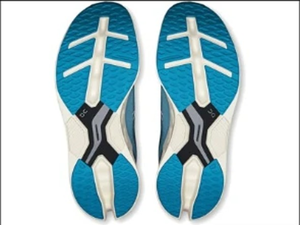
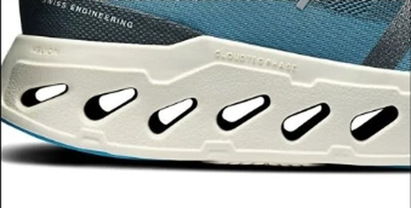

DAILY｜クッション型デイリー
耐久性5点、約800km走れる計算。
摩耗深度0.5mmは、計測のある104足の中で5番目に小さい。推定寿命は約800kmで、耐久性は5点満点。衝撃吸収141SAのクッションもある。¥23,100と高めだが、長く履ける分、1kmあたりは約29円に収まる。デイリー部門67足中17位。
1足を長く履きたい人。月間の走行距離が多い人。クッションのあるジョグ用を探している人。
ペースを上げる練習にも使いたい人。雨の日も走る人。


摩耗深度0.5mmは、Bondi 9（0.9mm）やボメロ 18（1.1mm）の半分程度である。推定寿命は約800kmで、比較する3足の中で一番長い。
衝撃吸収は141SAで、クッションは4.0点。実測272g（掲載値は285g）で、Bondi 9より31g軽い。
曲げ剛性は18.1Nと高い。足の動きに合わせて曲がる靴ではなく、硬めの土台で転がしていく靴である。
5点満点。計測値を当サイトのルールで点数にしたもの。
耐久性5.0、クッション4.0が点を支えている。軽さとスピードは2.5で、速く走る用途には向かない。デイリー部門で重く見るクッションと耐久性で、17位に入った。
短いほど減りにくい。
短いほど安い。寿命は摩耗深度から推定。
| Cloudeclipse | Bondi 9 | ボメロ 18 | |
|---|---|---|---|
| 価格 | ¥23,100 | ¥24,200 | ¥16,500 |
| 実測重量 | 272g | 303g | 298g |
| 衝撃吸収（SA） | 141 | 146 | 147 |
| エネルギーリターン前足部 | 55.9% | 60.3% | 58.9% |
| 摩擦係数 | 0.45 | 0.45 | 0.38 |
| 摩耗深度 | 0.5mm | 0.9mm | 1.1mm |
| 性能点 | 3.82 | 3.80 | 3.64 |
| コスパ点 | 3.5 | 3 | 3.5 |
Bondi 9は土台が広くクッションも高いが、31g重く、1kmあたりでは約40円かかる。ボメロ 18は¥6,600安く、クッションも147SAと高い。ただし摩耗深度1.1mmで、長く履くならCloudeclipseに分がある。
弱点は反発とグリップである。前足部のエネルギーリターンは55.9%で、デイリーとしても高くない。摩擦係数0.45も平均を下回る。雨の日はペースを落として走りたい。
曲げ剛性が高く、硬めの乗り心地である。柔らかく曲がる靴が好きな人は、試着で確認したい。
月に100km以上走る人ほど、寿命の長さが効いてくる。買い替えの手間を減らしたい人のジョグ用として向く。
減りにくく、クッションもある。速さは求めず、1足を長く履きたい人のための靴である。
※本記事は海外ラボ（RunRepeat）の計測データとメーカー公表値、当サイトの計算をもとにした分析です。計測はUS9（約27cm）です。1kmあたりの費用は摩耗深度から推定した寿命での概算です。価格は当サイトの掲載値で、変更されている場合があります。